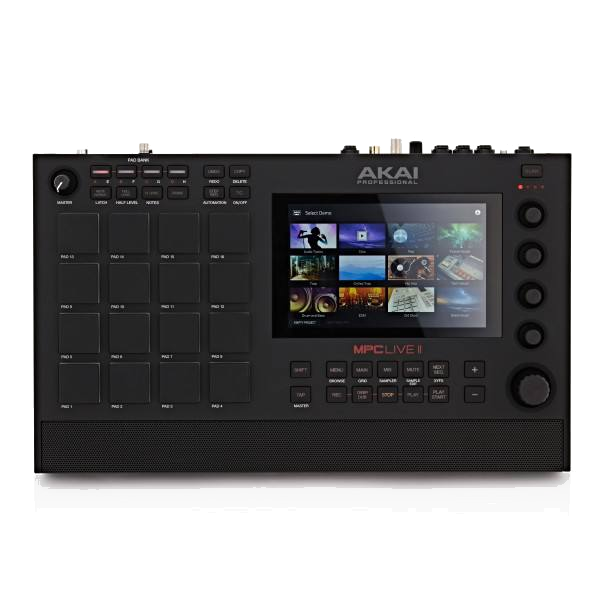

Island / Reggae Roots
Grounded in Samoan, church, family, reggae, and island music influence.
Polynesian roots • island sound • AI music
IsileliMusic is the creative brand of Isileli Lavea — producer, recording engineer, multi-instrumentalist, melody maker, and AI music builder from the Bay Area.
The sound
Grounded in Samoan, church, family, reggae, and island music influence.
Keyboard, drums, bass, guitar, melody writing, recording, mixing, and production.
Reggae, R&B, hip hop, EDM, alternative, country, rock, and orchestral textures.
Artist background
Born May 4, 1984, Isileli Lavea grew up in Northern California’s Bay Area with early musical roots in a Samoan Assemblies of God church. IsileliMusic carries that foundation into production, songwriting, artist development, ownership, and modern music technology.
AI music research
Books made people read.
Video made people watch.
AI may make people stop thinking for themselves.
Now I’m connecting my MPC to AI, watching the line between human and machine disappear in real time.
The scary part isn’t that AI can make music. It’s that humanity may eventually stop needing to.
That’s why IsileliMusic matters to me. Not because it’s perfect. Because it’s human.

Original vs Remix
Hear the source, then the remix treatment.
Official links
Follow the main IsileliMusic channels and AI music research pages.